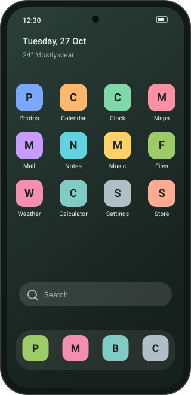
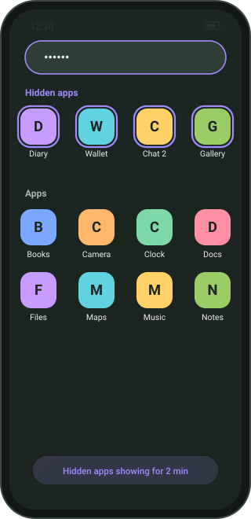
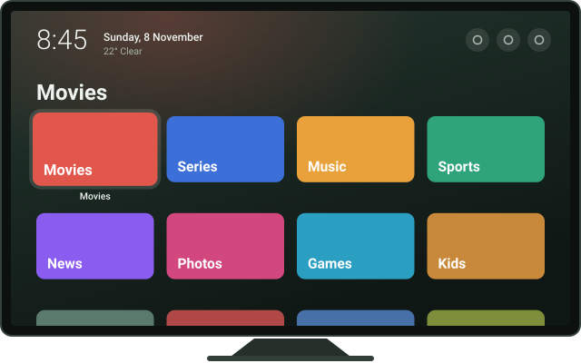
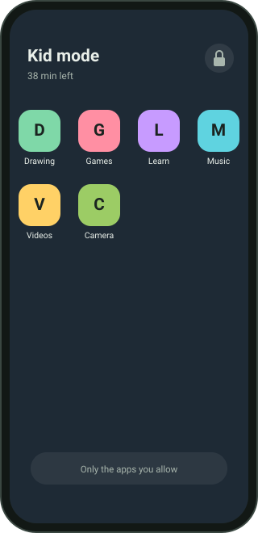
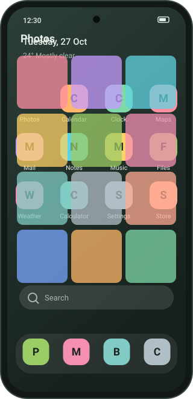

On your phone
- Hide and lock apps, with secret codes and vaults
- Kid and guest modes, fake crashes, disguised apps
- Any grid, icon packs, gestures and widgets
Hide apps, lock them, put them in secret vaults, or hand your phone or TV to someone else in a mode that shows only what you allow.
One app for Android phones, tablets and TVs. No account, and nothing about your apps leaves your device.


This is what anyone else sees.
Install Decoy once from Google Play. On a phone or tablet it's a full home screen. On an Android TV or Google TV it opens its own TV home screen, made for the remote.

Everything Decoy does on a phone or tablet, grouped by what it's for.

A PIN, your fingerprint or the phone's own screen lock. Lock several apps as a group, lock Decoy's own settings, and re-lock everything when the screen turns off.

Pick apps that show a convincing "has stopped" message instead of opening. You know the way through; nobody else does.

Kid and Guest modes show only the apps you allow, keep everything else locked, and need your code or fingerprint to leave.

New
Tap an app and its icon zooms to the middle of the screen, then opens out into the app. When you go home, the home screen zooms back in and the icon lands in its place. Choose from the other opening and closing styles, set the speed and how big the icon grows, and watch each one play with your own apps before you pick it.

New
The same idea, made for the remote: a home screen that looks the way you want, apps that need a PIN, and profiles for the kids with a daily time limit. Copy your setup from one TV to another in a minute.
There's nothing to sign up for. Decoy works the moment it's installed.
Your apps, PINs and settings are never uploaded. Backups go where you send them.
The accessibility service is off until you turn it on, and only checks which app is in front. It never reads what's on screen.
No. It's the same Decoy Launcher from Google Play. On a TV it opens the TV home screen automatically.
Decoy looks like an ordinary home screen. Hidden apps only come back with your code, your shape or your fingerprint.
Nothing about you or your apps. Some widgets fetch public information, such as the weather for the city you picked, and the TV's wallpaper can be Bing's photo of the day.
Yes. Every animation has a "None" or "System" choice, and when "Remove animations" is on in Android's accessibility settings, Decoy's animations switch off too.
Android 8.0 and newer, on phones, tablets, Android TV and Google TV.